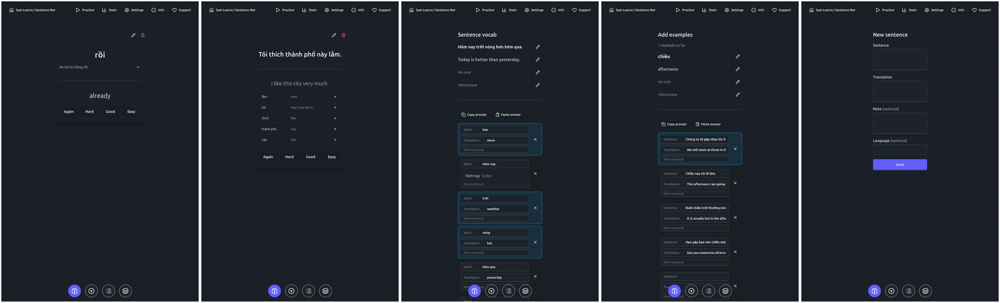

a failed flow for sentence-based language acquisition: split example sentences into words, add examples for those words
I've been thinking a lot about how to properly learn a language with (example) sentences, based on the following:
- Learning vocabulary in context of sentences is much smarter and more efficient than learning it without context. Or so would about any research suggest.
- If you don't speak the language well, a sentence isn't really context.
To elaborate on the second point: If you are a beginner Vietnamese learner, adding the example sentence Tôi thích thành phố này lắm (which you 0% understand) to your flashcard for thành phố | the city doesn't help at all.
I tried to attack this by implementing a flow like this:
- Add one example sentence of your choice
- Randomly be prompted to do one of the following:
- Extract the words/vocabulary from a sentence in your database where this has not been done (you may do this w/ an LLM)
- Add example sentence for vocabulary in the database where you have less than three (you may do this w/ an LLM)
- Practice random sentence with standard Spaced Repetition flashcard flow
- Practice random vocabulary with standard Spaced Repetition flashcard flow
Here are the screens needed for this (I test-implemented this as part of samlearns).

The UX of this isn't too bad, thanks to the LLM support it flows fairly smoothly (without it, even extracting vocab from a sentence would take a long time and you'd have way out when you get stuck, since you are only just learning the sentence).
However, due to the recurrent need to tab into ChatGPT to split sentences or find examples, I found myself in the mode of a data entry intern trying to be done and go home. This did little for my retention.
That turned out to be the terminal flaw of this concept.